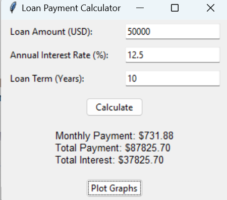
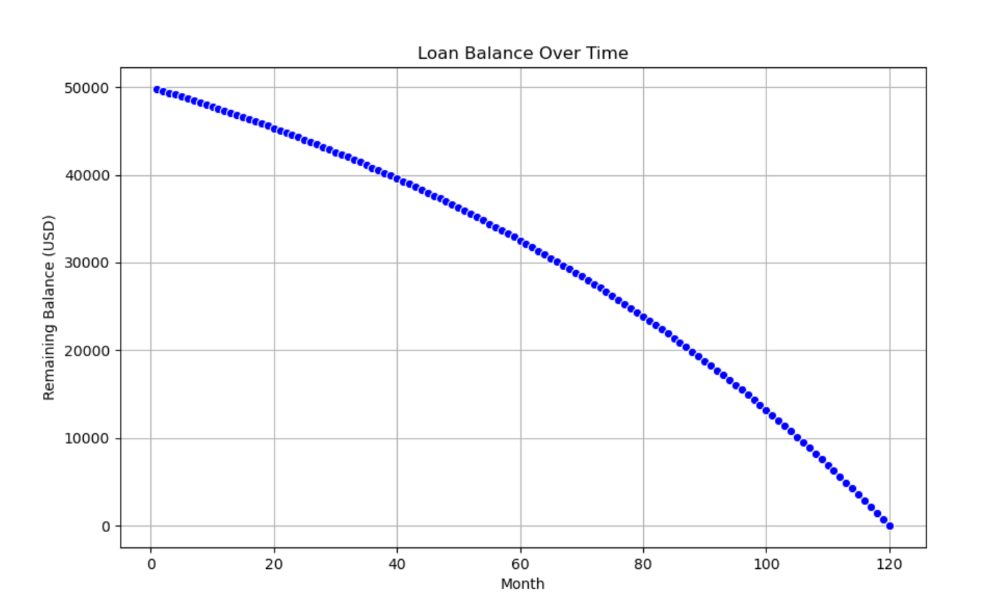

During my internship at C-10 Research & Education Foundation, I analyzed over 10,000 radiation reports across 15 datasets using Excel. I used pivot tables, conditional formatting, and data visualization to identify trends and report a variance of 314%. My findings streamlined the reporting process by 30% and were shared with the New Hampshire Department of Health for further review.
Leveraged Python to perform customer segmentation for a retail dataset. Using the RFM (Recency, Frequency, Monetary) model, I grouped customers into actionable segments such as "Loyal Customers" and "Big Spenders." The analysis included clustering via K-Means and visualizations to aid strategic insights.
Enhanced a school project with an interactive GUI and visualizations using Matplotlib, Seaborn, and Pandas to calculate and visualize loan repayments.
  View Code